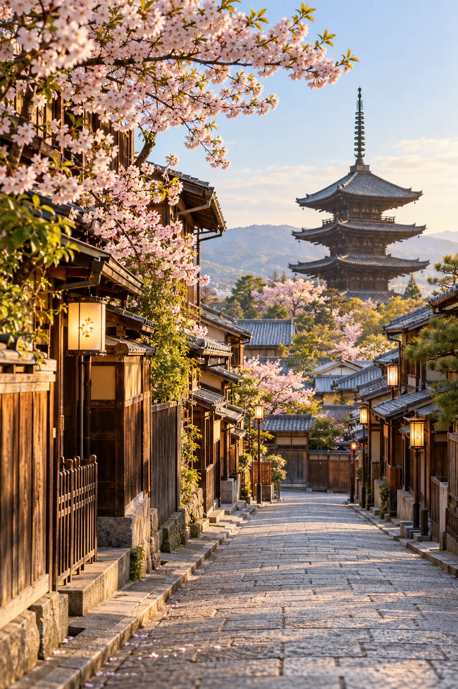

01 / ICONIC KYOTO
Фусими Инари
Тысячи алых ворот тории поднимаются по склону горы. Приходите рано утром: на нижних тропах будет заметно спокойнее. На короткую прогулку хватит часа, полный подъём займёт около 2–3 часов.
 Further.
Further.

ЯПОНИЯ · ГОРОД ТИШИНЫ И ТРАДИЦИЙ
Красные ворота среди леса, деревянные улочки Гиона и сады, в которых хочется задержаться. Киото раскрывается не спеша — шаг за шагом.
Пройти маршрут ↓ПОЧУВСТВОВАТЬ ГОРОД
Киото — бывшая столица Японии, где рядом существуют тихие дзен-сады, оживлённые торговые улицы и кварталы с деревянными фасадами. Лучший способ познакомиться с городом — выбрать один район на утро, оставить время на чай и не пытаться увидеть всё за день.
НЕ ПРОПУСТИТЬ
От прогулки сквозь тысячи тории до вечернего света над рекой Камо.
Тысячи алых ворот тории поднимаются по склону горы. Приходите рано утром: на нижних тропах будет заметно спокойнее. На короткую прогулку хватит часа, полный подъём займёт около 2–3 часов.

Деревянные фасады, переулки и чайные дома. Гуляйте пешком и уважайте частную жизнь местных жителей.

Золотой павильон отражается в тихом пруду. Посещение компактное, но лучше приезжать к открытию.

Высокие стебли бамбука и дорожки у подножия гор. Совместите с мостом Тогэцу и прогулкой вдоль реки.

ВКУС КИОТО
В Киото стоит пробовать не только суши: местная кухня тонкая, сезонная и часто построена вокруг овощей, бульонов и сои.
ПРОГУЛКА НА ДЕНЬ
Маршрут соединяет юг и восток города. Между районами удобнее перемещаться на метро или автобусе.
Начните день среди красных ворот, пока на тропах тихо.
Зал тысячи статуй Каннон и удивительная тишина внутри.
Прогуляйтесь по старым улочкам и попробуйте местную кухню.
Храм на склоне с деревянной террасой и видом на город.
Закончите день неспешной прогулкой и ужином.
СОБЕРИТЕ СВОЙ ДЕНЬ
Отметьте места, которые хочется увидеть. Мы посчитаем количество остановок и примерное время на посещение.
ПОЛЕЗНО ЗНАТЬ
Для поездок между районами используйте метро и автобусы. В часы пик автобусы могут быть переполнены — закладывайте запас времени.
В храмах соблюдайте тишину, следуйте указателям и не фотографируйте там, где это запрещено.
Киото кажется компактным, но районы разделяют расстояния. Не пытайтесь соединить Арасияму и восток города пешком.
СЛЕДУЮЩАЯ ОСТАНОВКА
Выберите даты и проверьте варианты перелёта.